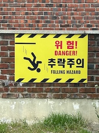
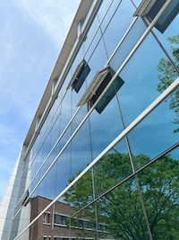

예술대학 천장
영남대학교 a06 건물의 천장 사진이다. 긴 쇠막대기들로 이루어 반듯한 모양이 반복되고 있다. 건축물의 특성상 정교하게 이루어져야 하므로 이런 반듯한 모양이 생긴 것 같다. 덕분에 몇 번 반복되지 않았지만, 패턴으로 보인다. 이러한 패턴의 형태가 일러스트 강의 중간 과제 물에 활용할 수 있다고 생각한다. 삼각형의 도형과 직선을 활용하여 나만의 패턴으로 제작해 보고 싶다.
경고 표지판
노란색과 빨간색으로 만들어진 경고 표지판이다. 노란색은 안전을 의미하는 색으로, 경고표지판이 주는 의미와 잘 어울리는 색이라고 생각한다. 또한 위험이라는 글자는 채도 높은 빨간색을 사용하여 강조된다. 고등학교 시절 동아리 활동을 위해 비슷한 표지판을 제작한 적이 있었다. 그때 알아봤던 것들이 이 표지판을 볼 때 생각나는 걸 보니 꽤 기억에 남는 활동이었던 것 같다.
책 표지
서점에서 책을 구경하던 중 선명한 파란색이 눈에 들어왔다. 이 책은 양귀자 작가님의“나는 소망한다 내게 금지된 것을”이라는 책이다. 특정된 형태가 없는 모양 안에는 사람들의 시선에 맞는 위계로 글자가 나열되어 있다. 최근 마이크로 타이포그래피 수업을 들으며 글자 위계를 더 생각하게 되었다. 다음에 기회가 된다면 책을 구매해 읽어보아야겠다.
전봇대
전봇대에 거미줄처럼 처진 전선을 보니 옛날에 봤던 글이 생각났다. 전봇대의 전선들이 도시의 미관을 해친다는 얘기였다. 그렇기에 최근 신도시에서는 전봇대를 찾아보기 힘들다는 것도 알았다. 전봇대가 지상에 없다면 여러 장점이 있다. 먼저 도시의 미관이 깔끔해진다. 또한 전선이 날씨 요인에 의해 단선되지 않는다. 그리고 정전되어 받는 인명피해, 재산 피해를 피할 수 있다는 것이다. 이렇게 관련한 글을 읽어보며 이후 인공지능의 발달로 스마트 전봇대의 활용이 늘어남에 따른 외관 디자인도 고민해 보게 되었다.
건물
영남대학교 미술관 건물 외벽이다. 외벽이 비치는 재질로 만들어졌기 때문에 주변이 반영되는 효과가 있다. 그 때문에 사진에서 볼 수 있듯이 주변 나무가 비치는 걸 볼 수 있다. 이러한 반영이라는 개념은 최근 소셜미디어 사진영상 수업에서 배웠다. 반영 효과를 사용함으로 새로운 형태를 만들 수 있다. 과제로 제출할 때 한 번 시도한 게 다였지만, 이번에 건물 사진을 찍으면서 생각보다 많이 찾아볼 수 있다는 걸 깨달았다.
고양이집
영남대학교 디자인관 앞에 있는 고양이 집이다. 영대에는 고양이가 많은데 그 고양이들을 위해 누군가 설치한 것 같다. 자세히 보면 생각보다 더 작은 크기 때문에 집보다는 식사를 위한 장소같기도 하다. 상자말고도 고양이를 위한 작은 집을 마련해 주려면 어떤 것이 좋을지 잠깐 고민하게 되었다.
기차
동대구에서 경산으로 가는 기차이다. 열차가 도착하고 탑승하기 전까지 남는 시간에 열차를 자세히 보게 되었다. 그러다가 문득 기차의 앞부분은 왜 저렇게 생겼을까? 라는 궁금증이 생겼다. 찾아보니 고속으로 달려야 하는 기차의 특성을 감안해 공기의 저항을 최소한으로 받기 위해 디자인된 것이라고 한다. 반면 지하철은 기관사의 안전을 위해 기차와는 다른 일자형에 가까운 모습으로 디자인되었다는 걸 알 수 있었다.
카페 벽 장식
깔끔하게 흰색으로 도배된 벽과 유리로 된 테이블이 잘 조화되는 카페이다. 평소에도 집을 꾸민다면 식물을 활용하고 싶었기에 더 시선이 갔다. 바구니에 덩굴 식물을 넣어 장식한 것은 나에게 새로운 아이디어를 주었다. 여기서 내 생각을 더 한다면 덩굴 식물처럼 흘러내리는 물건을 활용하는 것이다. 식물과 장식이 비슷한 느낌으로 같이 있으면 더 좋을 것이다.
카페 벽 그림
스타벅스 안에서 본 그림들이다. 스타벅스는 내부 인테리어 디자인을 나무 활용을 많이 하는 편이다. 그런 나무 인테리어가 주는 따뜻한 분위기와 수채화가 주는 포근한 느낌이 잘 어울린다고 생각했다. 또한 실제 카페 메뉴를 그린 그림은 카페 메뉴를 홍보하면서도 잘 어울리는 느낌을 준다.
노래방 화면
노래방 기본 화면을 보면 사진과 같은 영상이 나오는 걸 알 수 있다. 저런 영상을 어떻게 만드는 건지 궁금해졌다. 또한 자막이 노래에 맞춰 움직이는 방법 등 한 가지가 궁금해 지니 여러 개가 같이 궁금해졌다. 아직 영상 디자인, 편집 같은 건 배워본 적이 없지만, 학년이 올라가면 꼭 배워보고 싶은 부분이다.